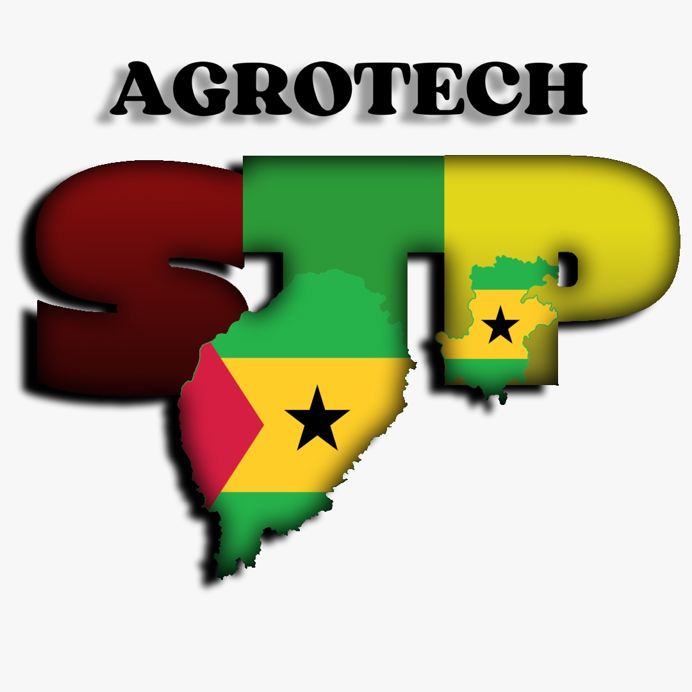

Bem vindo ao meu site
Sou Valdemiro Vila Nova Soares natural de São Tomé e Principe aluno do Curso Profissional TEAC(Técnico de Elétronica Automoção e Computadores),frequento 12ºano na Escola Técnica Profissional de Mafra ETPM tenho 22 anos e sou Natural de São Tomé e Principe e neste site você poderá observar um pouco do meu Projeto final da PAP.
Sobre Nós...
AGROTECH-STP é uma empresa criada pelo aluno Valdemiro Soares com intuito de poder ajudar a agricultura Santomense, e não só também de poder implementar um mega projeto no pais para desenvolvimento da agricultura e poder ajudar os agricultores que têm a sua horta bem distante do riachos.

Logotipo
O meu Logotipo foi criado na Canva e foi recortado depois na galeria.

Escolha e fundamento do projeto

Primeiramente antes de fazer este projeto eu estava focado em fazer um sistema de irrigação com Nodemcu e depois de vários testes decidi por fazer usando o Modúlo Réle Bluetooth. E depois disso o modúlo não funcionou, passei á usar só interruptores(ON/OFF). O projeto consiste em ajudar á tratar bem as plantas, flores em sua casa usando quatro botões como interruptores (ON/OFF) e a bomba de água como fonte do projeto e que fará a água sair do reservatório e poder irrigar as suas plantas e flores até a sua estufa. Este meu projeto tem como objetivo de ajudar os agricultores e não só. Usei uma lampada de crescimento para ajudar e não só também em crescimento das plantas e também em amadurecimento dos frutos. Usei a Ventoinha com a base de ajudar e melhorar a humidade dentro da estufa ou da horta.
Resumo
O projeto corresponde à última fase do curso Técnico e Profissional de Eletrónica, Automação e Computadores, onde se deverá apresentar uma Prova de Aptidão Profissional (PAP), visando demonstrar os conhecimentos adquiridos ao longo dos três anos de formação. Nessa sequência, apresento o AGROTECHSTP que se trata de uma horta inteligente onde os agricultores poderão conservar as suas plantas e também poupar mais água para a sua rega O objetivo da criação deste projeto é a possibilidade de o implementar em São Tomé e Príncipe, o meu país de origem, visto que lá os rios, lagos ou outras fontes de recolha de água ficam a uma distância considerável dos locais onde os agricultores têm as suas hortas ou estufas. Este projeto consiste em ajudar a cuidar de plantas e flores, através da utilização de um uma bomba de água e interruptor que quando eu clicar faz com que a água saia do reservatório e seja capaz de irrigar as plantas e flores da respetiva horta ou estufa .